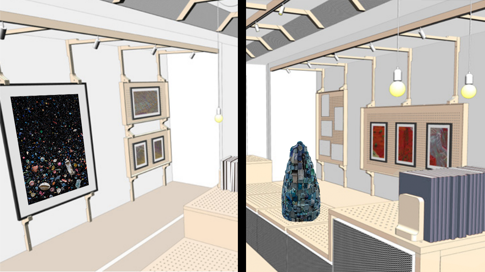
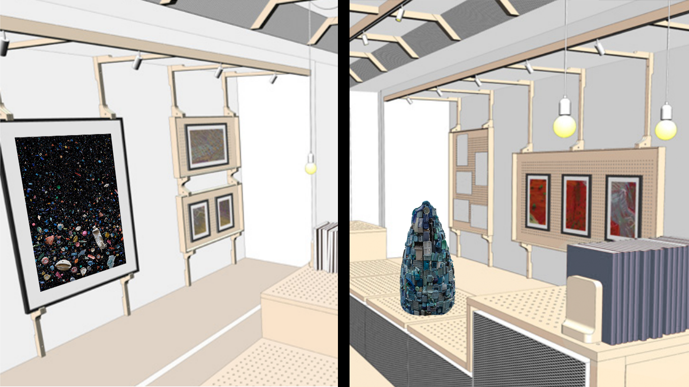

Le Musée Itinérant d'Art (en) Plastique, c'est une série d'expositions dans toute la France pendant un an pour lutter contre la pollution due aux déchets en plastique.
La France produit environ 4,5 millions de tonnes de déchets plastiques par an, et dont seulement 22% sont recyclés. Malgré les initiatives pour limiter la pollution, on estime qu’environ 80 000 tonnes finissent dans la nature chaque année.
48 villes en 48 semaines, dans 12 régions de la France
Pour résoudre ce problème, nous allons traverser la France dans notre camion-musée en présentant des oeuvres d’artistes faites avec les déchets plastiques ramassés dans les espaces naturels des régions traversées. Vous verrez de l'art, mais vous apprendrez aussi beaucoup sur les problèmes environnementaux et sanitaires liés au plastique. Vous en sortirez avec des solutions pour réduire vos déchets plastique.
Le grand final
A la fin des 48 semaines, nous organiserons une exposition d’un mois à Paris dans une galerie d’art avec toutes les oeuvres que les artistes des différentes régions auront créées avec le plastique récolté. Cette exposition mettra en lumière le caractère national de ce problème, ainsi que des histoires de notre voyage.
 
